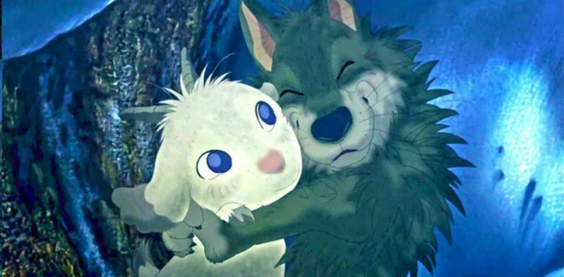

im hoping to take a web course while im enrolled so I can make my website look better I also want to meet new pepole and neard out and figure out how tough classes will be im just going to try and not rush things and just test the water then if I think im ready ill take the full 4 classes and enroll for both semesters for the rest of the year hopefuly I find somone I can be like this with
the screen just really hurts my eyes sometimes and programming is just frustrating espically when you havent picked it up in a while despite that ive been ignoring my headaches and ive been playing terraria insted becuase I got it for somone I really like so ive been playing with them and it's pretty fun this video is the first good terraria challange that ive seen in a while most of them lately have been insanely hard or way to simple to be interesting like beating terraria only with X wepon or playing one a world where X is swaped with Y or beating terraria in a world with no blank it's been a lot of those challanges but this one is pretty cool so mabey watch it if your bored another reason I havent been active is because I havent had a good idea of what I want to do with my site the last thing I wanted to try was make a php page for a gues book but you cant do that on a hosting service so I havent had anything I want to do I think I can change my links page and add a button on each of my pages that goes back to the links page but that will probably be it for now sorry ):